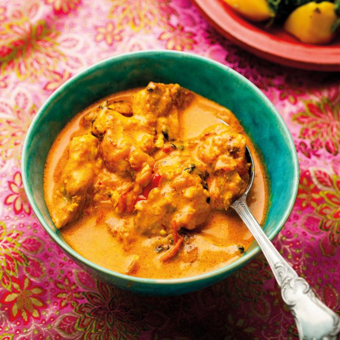

Butter Chicken

Description
Butter Chicken (or murgh makhani) is a more sophisticated version of the ever popular Chicken tikka masala. It has its origins in Northern India and consists of chicken marinated in spiced yogurt then cooked in a sauce rich with Butter, tomato and spices.
This recipe comes from The Spicery Curry Legend Cookbook.
Ingredients
- 500g diced chicken (thighs are best)
- 2 cloves of garlic - finely chopped
- Fresh ginger - finely chopped to make 1 tbsp
- 2 tomatoes - roughly chopped
- ½ lemon
- 50g butter
- 75g natural yogurt (full fat is best)
- 50ml cream (any type)
- 2 tbsp tomato puree
- 2 tsp sugar
Method
- Buy all of the ingredients
- Ask your babs very nicely to make dinner for you
- Put the rice on
- Enjoy the babsy noms!
Home